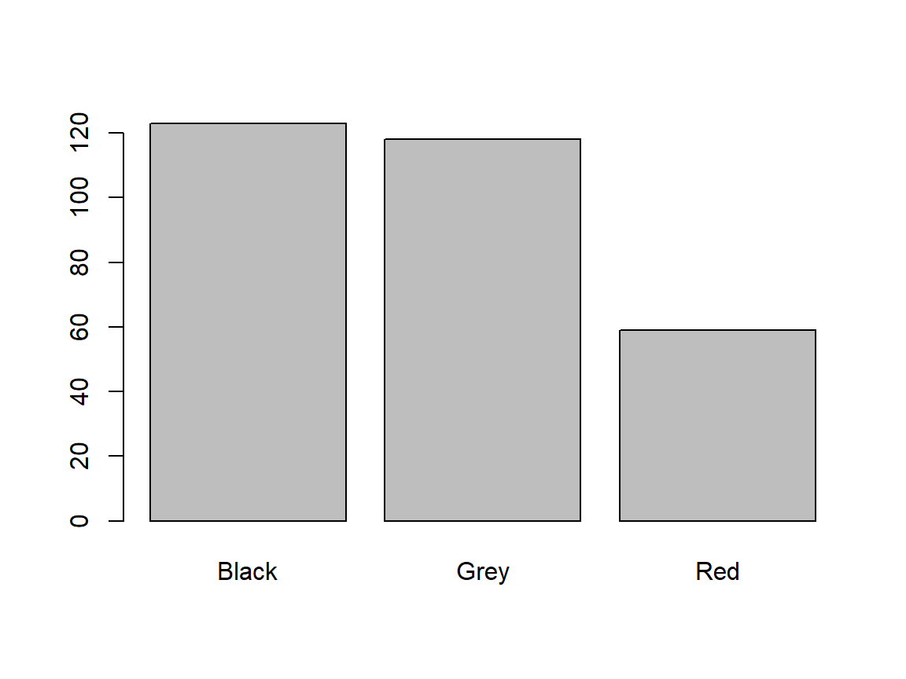
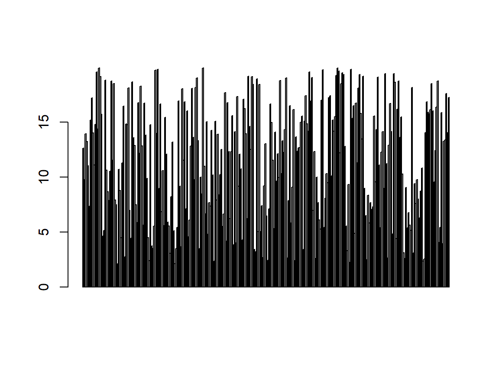
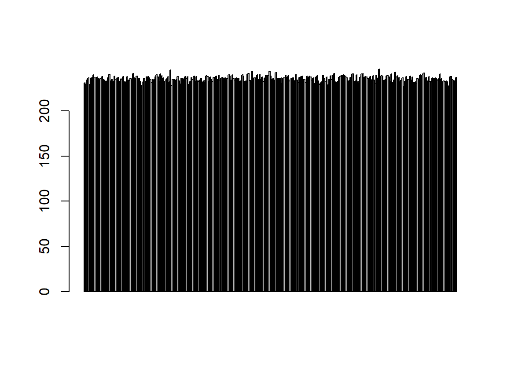
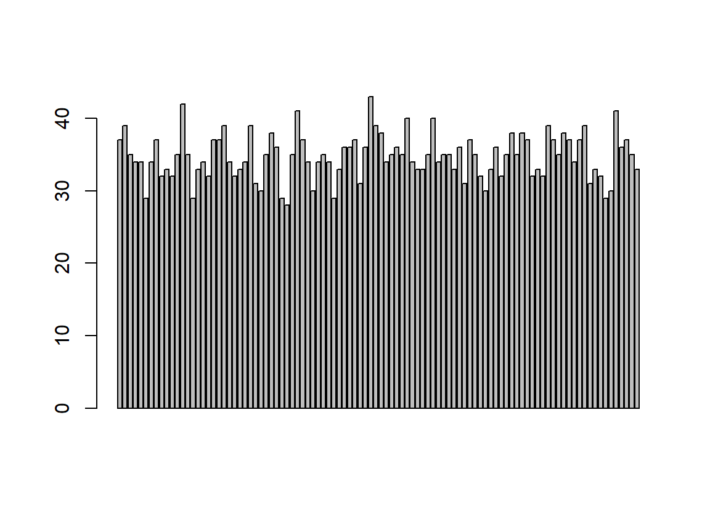
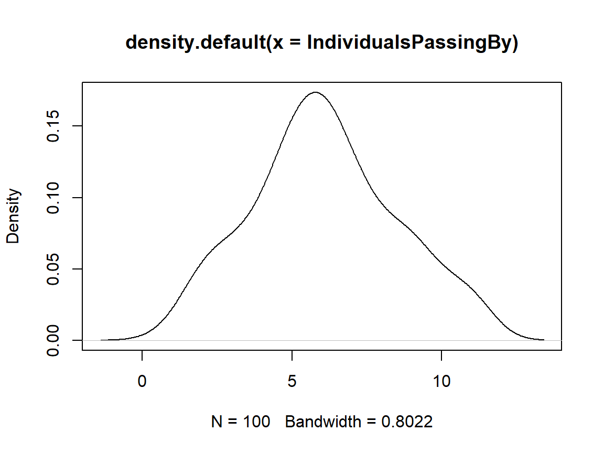

A Primer For Statistical Tests
Theory
These are the solutions to the exercises contained within the handout to A Primer For Statistical Tests which walks you through the basics of variables, their scales and distributions. Keep in mind that there is probably a myriad of other ways to reach the same conclusions as presented in these solutions.
I have prepared some I have prepared some Lecture Slides for this session.
Data
Find the data for this exercise here.
Loading the R Environment Object
load("Data/Primer.RData") # load data file from Data folder
Variables
Finding Variables
ls() # list all elements in working environment
## [1] "Colour" "Depth" "IndividualsPassingBy"
## [4] "Length" "Reproducing" "Sex"
## [7] "Size" "Temperature"
Colour
class(Colour) # mode
## [1] "character"
barplot(table(Colour)) # fitting?

| Question | Answer |
|---|---|
| Mode? | character |
| Which scale? | Nominal |
| What’s implied? | Categorical data that can’t be ordered |
| Does data fit scale? | Yes |
Depth
class(Depth) # mode
## [1] "numeric"
barplot(Depth) # fitting?

| Question | Answer |
|---|---|
| Mode? | numeric |
| Which scale? | Interval/Discrete |
| What’s implied? | Continuous data with a non-absence point of origin |
| Does data fit scale? | Debatable (is 0 depth absence of depth?) |
IndividualsPassingBy
class(IndividualsPassingBy) # mode
## [1] "integer"
barplot(IndividualsPassingBy) # fitting?
| Question | Answer |
|---|---|
| Mode? | integer |
| Which scale? | Integer |
| What’s implied? | Only integer numbers with an absence point of origin |
| Does data fit scale? | Yes |
Length
class(Length) # mode
## [1] "numeric"
barplot(Length) # fitting?

| Question | Answer |
|---|---|
| Mode? | numeric |
| Which scale? | Relation/Ratio |
| What’s implied? | Continuous data with an absence point of origin |
| Does data fit scale? | Yes |
Reproducing
class(Reproducing) # mode
## [1] "integer"
barplot(Reproducing) # fitting?

| Question | Answer |
|---|---|
| Mode? | integer |
| Which scale? | Integer |
| What’s implied? | Only integer numbers with an absence point of origin |
| Does data fit scale? | Yes |
Sex
class(Sex) # mode
## [1] "factor"
barplot(table(Sex)) # fitting?

| Question | Answer |
|---|---|
| Mode? | factor |
| Which scale? | Binary |
| What’s implied? | Only two possible outcomes |
| Does data fit scale? | Yes |
Size
class(Size) # mode
## [1] "character"
barplot(table(Size)) # fitting?
| Question | Answer |
|---|---|
| Mode? | character |
| Which scale? | Ordinal |
| What’s implied? | Categorical data that can be ordered |
| Does data fit scale? | Yes |
Temperature
class(Temperature) # mode
## [1] "numeric"
barplot(Temperature) # fitting?

| Question | Answer |
|---|---|
| Mode? | numeric |
| Which scale? | Interval/Discrete |
| What’s implied? | Continuous data with a non-absence point of origin |
| Does data fit scale? | Yes (the data is clearly recorded in degree Celsius) |
Distributions
Length
plot(density(Length)) # distribution plot

shapiro.test(Length) # normality check
##
## Shapiro-Wilk normality test
##
## data: Length
## W = 0.99496, p-value = 0.4331
The data is normal distributed.
Reproducing
plot(density(Reproducing)) # distribution

shapiro.test(Reproducing) # normality check
##
## Shapiro-Wilk normality test
##
## data: Reproducing
## W = 0.98444, p-value = 0.2889
The data is binomial distributed (i.e. “How many individuals manage to reproduce”) but looks normal distributed. The normal distribution doesn’t make sense here because it implies continuity whilst the data only comes in integers.
IndividualsPassingBy
plot(density(IndividualsPassingBy)) # distribution

shapiro.test(IndividualsPassingBy) # normality check
##
## Shapiro-Wilk normality test
##
## data: IndividualsPassingBy
## W = 0.96905, p-value = 0.0187
The data is poisson distributed (i.e. “How many individuals pass by an observer in a given time frame?").
Depth
plot(density(Depth)) # distribution

The data is uniform distributed. You don’t know this distribution class from the lectures and I only wanted to confuse you with this to show you that there’s much more out there than I can show in our lectures.